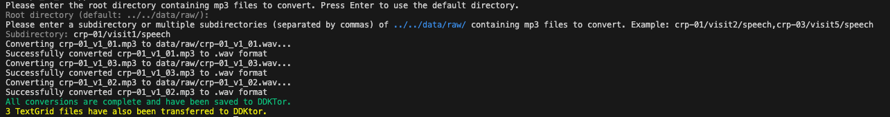

Section 5 Preprocessing data
5.1 Clear out the ddktor-dbs/data/raw folder using clear_raw.py
Before running the preprocessing scripts, ensure that the ddktor-dbs/data/raw folder is empty. This folder is where the audio files and corresponding TextGrid files will be transferred to after running the mp3_to_wav.py script.
You can easily clear out the ddktor-dbs/data/raw folder by running the following command from the ddktor-dbs directory: python3 clear_raw.py This script will delete all files in the ddktor-dbs/data/raw folder.
5.2 Run m4a_to_mp3 (if needed)
Before running the mp3_to_wav.py script, you may need to convert your audio files from m4a to mp3 format. If your audio files are in m4a format, you can convert them to mp3 format before running the mp3_to_wav.py script.
It will ask you for the root directory containing the m4a files to convert. Press Enter to use the default directory. It will then ask you for a subdirectory or multiple subdirectories (separated by commas) of data/raw/ containing m4a files to convert. Enter them as a comma-separated list. An example is provided in the prompt.
An example input is provided below:
crp-01/visit2/speech
5.3 Run mp3_to_wav.py
DDKtor requires all audio files to be in wav format. If your audio files are in mp3 format, you can convert them to wav format.
A script titled mp3_to_wav.py is provided in the pipeline folder. This script will convert all mp3 files in the data folder to wav files. Additionally, it will transfer these wav files to the ddktor-dbs/data/raw folder along with the corresponding TextGrid files. In order for this script to run, ALL files must be organized in the following manner:
- All files must be located in the
data/raw/folder.
- All files must be in the format
subjectID_visitID_instanceID.mp3(e.g.,crp-01_v1_01.mp3)- Don’t forget the leading zero for single-digit instance subject and instance IDs.
- All files must have a corresponding TextGrid file in the format
subjectID_visitID_instanceID.TextGridthat is exactly the same as the audio file. (e.g.,crp-01_v1_01.TextGrid)
Ensure your data is organized in a similar manner to the following:
data
├── raw
│ ├── crp-01
│ │ ├── visit1
│ │ │ ├── speech
│ │ │ │ ├── crp-01_v1_01.mp3
│ │ │ │ ├── crp-01_v1_01.TextGrid
│ │ │ │ ├── (...)
│ │ ├── visit2
│ │ │ ├── speech
│ │ │ │ ├── crp-01_v2_01.mp3
│ │ │ │ ├── crp-01_v2_01.TextGrid
│ │ │ │ ├── (...)
│ ├── crp-xx
│ │ ├── visitx
│ │ │ ├── speech
│ │ │ │ ├── crp-xx_vx_0x.mp3
│ │ │ │ ├── crp-xx_vx_0x.TextGrid
│ │ │ │ ├── (...)
(...)To run the script, navigate to the pipeline folder and run the following command: python3 mp3_to_wav.py. The script will prompt you for several inputs:
Please enter the root directory containing mp3 files to convert. Press Enter to use the default directory.: Press Enter to use the default directory.Please enter a subdirectory or multiple subdirectories (separated by commas) of ../../data/raw/ containing mp3 files to convert. Example: crp-01/visit2/speech,crp-03/visit5/speech: Enter one or more subdirectories containing the mp3 files you would like to convert. Enter them as a comma-separated list. An example is provided in the prompt.- You should see a message indicating that the script is converting the mp3 files to wav files. Each file will either be successfully converted or an error message will be displayed.
- Once the script has finished running, you should see a green message indicating
All conversions are complete and have been saved to DDKtor. - Importantly, it should also display a message indicating
TextGrid files have also been transferred to DDKtor.Make sure that the number of TextGrid files transferred matches the number of wav files transferred.

Now, navigate to the ddktor-dbs/data/raw folder and ensure that all of the wav files and corresponding TextGrid files have been transferred successfully.
5.4 Run match.py (optional)
If you have a large number of files and would like to ensure that all audio files have corresponding TextGrid files, you can run the match.py script. This script will check for any audio files that do not have corresponding TextGrid, or vice versa. If any files are missing, the script will display a message indicating which files are missing. It also returns the number of matches.
This step is not required, but it can be helpful to ensure that all files have been transferred successfully.